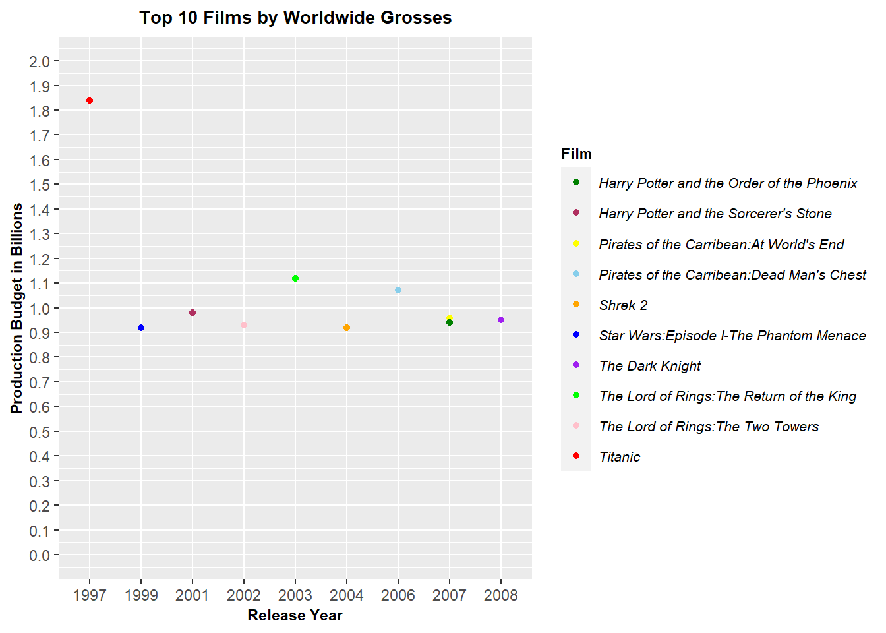

Year_of_Release <- c("1997","1999","2001","2002","2003","2004","2006","2007","2007","2008")
Film <- c("Titanic",
"Star Wars:Episode I-The Phantom Menace",
"Harry Potter and the Sorcerer's Stone",
"The Lord of Rings:The Two Towers",
"The Lord of Rings:The Return of the King",
"Shrek 2",
"Pirates of the Carribean:Dead Man's Chest",
"Pirates of the Carribean:At World's End",
"Harry Potter and the Order of the Phoenix",
"The Dark Knight")
Production_Budget <- c(1.84,0.92,0.98,0.93,1.12,0.92,1.07,0.96,0.94,0.95)Code & Implementation

Data analysed from the graph
filmdata <- data.frame(Year_of_Release,Film,
Production_Budget)
filmdata Year_of_Release Film Production_Budget
1 1997 Titanic 1.84
2 1999 Star Wars:Episode I-The Phantom Menace 0.92
3 2001 Harry Potter and the Sorcerer's Stone 0.98
4 2002 The Lord of Rings:The Two Towers 0.93
5 2003 The Lord of Rings:The Return of the King 1.12
6 2004 Shrek 2 0.92
7 2006 Pirates of the Carribean:Dead Man's Chest 1.07
8 2007 Pirates of the Carribean:At World's End 0.96
9 2007 Harry Potter and the Order of the Phoenix 0.94
10 2008 The Dark Knight 0.95Libraries
library(ggplot2)
library(plotly)Redesign 1
Plot3 = ggplot(filmdata, aes( x=Year_of_Release,y=Production_Budget))+
geom_bar(stat = "identity", color="black",aes(fill = Film),position = "dodge")+
scale_y_continuous(limits=c(0,2))+
labs(x ="Release Year",y="Production Budget in Billions",title ="Top 10 Films by Worldwide Grosses")+
scale_fill_manual(values = c(rgb(0,0.3,0),"grey","yellow","skyblue","orange","blue","purple","green","pink","red"))+
theme(legend.text=element_text(size=8,face="italic"),
legend.title=element_text(size=8.5,face="bold"),
plot.title=element_text(size=10,face="bold",hjust=0.5),
axis.title=element_text(size=8.5,face="bold"))
Plot3Using ggplotly to make the above graph interactive.
ggplotly(Plot3)Redesign 2
Plot4 = ggplot(filmdata, aes(x = Year_of_Release, y = Production_Budget)) +
geom_point(aes(color = Film))+
scale_y_continuous(limits = c(0,2), breaks = seq(0,2,.1))+
labs(x ="Release Year",y="Production Budget in Billions",title ="Top 10 Films by Worldwide Grosses")+
scale_color_manual(values = c(rgb(0,0.5,0),"maroon","yellow","skyblue","orange","blue","purple","green","pink","red"))+
theme(legend.text=element_text(size=8,face="italic"),
legend.title=element_text(size=8.5,face="bold"),
plot.title=element_text(size=10,face="bold",hjust=0.5),
axis.title=element_text(size=8.5,face="bold"))
Plot4
Using ggplotly to make the above graph interactive.
ggplotly(Plot4)